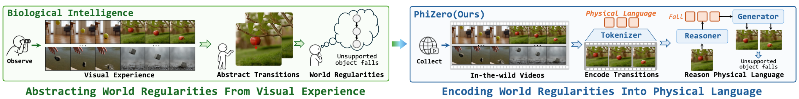
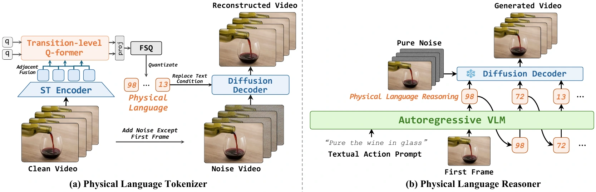
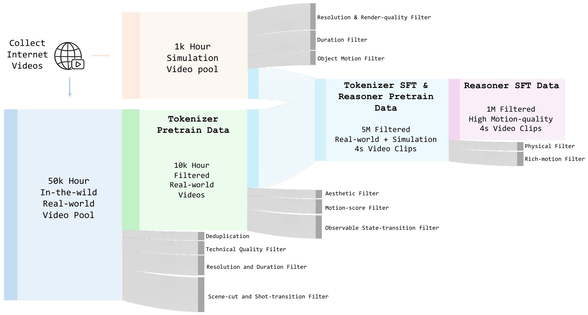

Physical language
A compact, discrete language of state transitions learned from diverse unlabeled videos, separating world dynamics from visual appearance.
A physical world model that reasons in a compact, discrete physical language before rendering future world evolution into video.

Biological intelligence abstracts reusable regularities from visual experience. PhiZero brings the same idea to video world models by explicitly encoding how the world changes.
We introduce PhiZero, a physical world model built around physical language: a compact discrete representation of state-transition patterns learned self-supervisedly from in-the-wild videos. PhiZero follows a reason-then-render paradigm. It first infers future evolution in the physical-language space, then renders that transition into predicted video.
A compact, discrete language of state transitions learned from diverse unlabeled videos, separating world dynamics from visual appearance.
An autoregressive VLM predicts physical language from a first frame and action intent; a video diffusion model then renders the inferred evolution to videos.
The same transition representation supports physical generation, interactive control, and zero-shot transfer across appearances, embodiments, and domains.

A transition-level Q-Former attends to adjacent latent video states. FSQ converts those features into a discrete physical language, while a diffusion decoder reconstructs the video from the physical language and first frame.
A pretrained VLM takes the current visual state and an action intent, then autoregressively predicts the physical-language sequence. The frozen decoder translates that explicit transition plan back into video.
Progressive filtering turns a 50K-hour in-the-wild pool into 10K hours for tokenizer pretraining. A mix of real and simulated videos yields 5M clips for tokenizer SFT and reasoner pretraining, then 1M high-motion-quality clips for reasoner SFT.

| Model | IQ-Score ↑ |
|---|---|
| Wan2.2-5B | 21.2 |
| Sora 2 | 26.5 |
| Cosmos3-Nano | 29.1 |
| Wan2.2-14B | 32.2 |
| Hunyuan-Video | 33.4 |
| Grok-Video | 34.8 |
| Cosmos3-Super | 39.5 |
| PhiZero (Ours) | 41.2 |
| Model | Physics Score ↑ |
|---|---|
| LTX-Video-19B | 2.54 |
| LTX-Video-22B | 2.56 |
| Wan2.2-5B | 2.65 |
| Cosmos2.5-2B | 2.70 |
| OmniWeaving | 2.78 |
| Veo3.1 | 2.85 |
| Wan2.2-14B | 2.90 |
| PhiZero (Ours) | 3.01 |
| Model | Physics Adherence ↑ |
|---|---|
| Pandora | 4.05 |
| OpenSora-Plan | 3.85 |
| CogVideoX | 3.88 |
| Mochi | 4.14 |
| Luma | 4.13 |
| Wan2.2-5B | 4.51 |
| Runway | 4.27 |
| PhiZero (Ours) | 4.88 |
| Model | Overall ↑ |
|---|---|
| Cosmos-4B | 49.41 |
| Qwen-VL 2.5 | 52.27 |
| Gemini-1.5 Pro | 52.27 |
| GPT-4o | 53.75 |
| VideoMAEv2 | 53.75 |
| V-JEPA | 53.75 |
| Gemini-2.5 Flash | 55.63 |
| PhiZero (Ours) | 55.78 |
Across all four benchmarks, PhiZero achieves the best selected physics metric, showing that explicit physical-language reasoning improves both generation fidelity and physical understanding.
Prompt 01 A brown tennis ball rolls straight out of a black pipe across a light beige coffee table and strikes a small yellow rubber duck, with a mustard couch visible behind the table, with the camera held in a fixed close view.
Prompt 02 A blue-black grabber holds a blue tennis ball over a mound of green kinetic sand on a wooden table, then releases the ball into the soft pile, with clear colors and minimal background clutter.
Prompt 03 A yellow tennis ball rolls from a black pipe onto a simple cardboard ramp propped by a blue block on a light wooden table against a plain wall, in a bright indoor tabletop setup.
Prompt 04 A row of colorful wooden blocks stands on a wooden table beside a black platform, where a rotating wooden stick swings clockwise and knocks the first block, with clear colors and minimal background clutter.
Prompt 05 A yellow mug and a blue rectangular block rotate together around the center of a black platform while a spotlight projects their large shadows onto the wall, with the camera held in a fixed close view.
Prompt 06 A clear acrylic box suspended from an orange cord lowers over a tennis ball with a smiley face on a wooden table, covering it from view, with the camera held in a fixed close view.
Prompt 07 A tennis ball hanging in front of a mirror is slowly lowered, while the mirror creates a second reflected ball beside it in the frame, with the camera held in a fixed close view.
A four-second, 33-frame video is encoded with 256 discrete physical-language symbols, compared with 44,800 continuous tokens for the Wan2.2 VAE, while retaining strong reconstruction quality among highly compressed tokenizers.
Explore physical-language transfer, fine-grained action conditioning, cross-embodiment retargeting, and sim-to-real rendering.
Because physical language encodes how the world changes rather than how it looks, the same transition can be rendered with a new object, scene, embodiment, or visual domain.
PhiZero first tokenizes a source transition into a discrete physical-language sequence that describes how the state changes. It then combines that sequence with an edited or newly selected first frame, allowing the video decoder to render the same transition under a new object, appearance, material, or embodiment.
The Human → G1 humanoid, Human hand → Sharpa dexterous hand, and Simulation → reality demos above use the same recipe: reuse the source physical language while replacing the visual state from which the transition is rendered.
The current manuscript is available as a preprint. Public ArXiv and code links can be activated from the site configuration as soon as they are released.
Shuyao Shang, Yuqi Wang, Ruopeng Gao, Xu Chen, Tieniu Tan, Lue Fan, Zhaoxiang Zhang
Open PDF ↗@article{shang2026phizero,
title = {PhiZero: Learning Physical Video World
Model from In-the-wild Videos},
author = {Shang, Shuyao and Wang, Yuqi and
Gao, Ruopeng and Chen, Xu and Tan, Tieniu and
Fan, Lue and Zhang, Zhaoxiang},
year = {2026},
note = {Preprint}
}